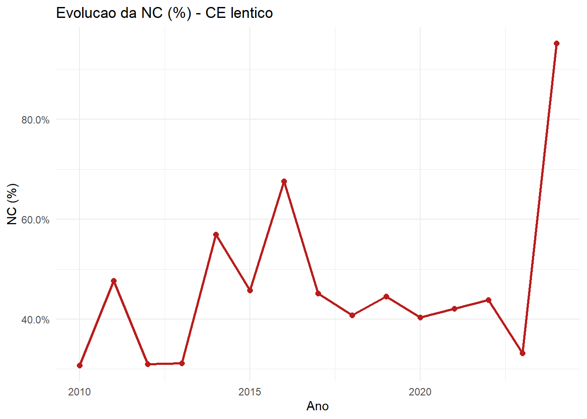

Este relatorio audita os dados de DBO no CE (regime lentico) para avaliar se o aumento acentuado da NC em 2024 pode estar ligado a:
| ano | n_obs | n_validos | n_codigos | nc | nc_pct |
|---|---|---|---|---|---|
| 2010 | 26 | 26 | 24 | 8 | 30.77 |
| 2011 | 44 | 44 | 27 | 21 | 47.73 |
| 2012 | 168 | 168 | 94 | 52 | 30.95 |
| 2013 | 302 | 302 | 114 | 94 | 31.13 |
| 2014 | 93 | 93 | 23 | 53 | 56.99 |
| 2015 | 153 | 153 | 54 | 70 | 45.75 |
| 2016 | 306 | 306 | 89 | 207 | 67.65 |
| 2017 | 372 | 372 | 114 | 168 | 45.16 |
| 2018 | 439 | 439 | 122 | 179 | 40.77 |
| 2019 | 440 | 440 | 126 | 196 | 44.55 |
| 2020 | 421 | 421 | 129 | 170 | 40.38 |
| 2021 | 561 | 561 | 143 | 236 | 42.07 |
| 2022 | 349 | 349 | 132 | 153 | 43.84 |
| 2023 | 274 | 274 | 135 | 91 | 33.21 |
| 2024 | 573 | 573 | 153 | 546 | 95.29 |
| mes | n_obs | n_validos | n_codigos | nc | nc_pct |
|---|---|---|---|---|---|
| 1 | 82 | 82 | 74 | 79 | 96.34 |
| 2 | 48 | 48 | 42 | 43 | 89.58 |
| 3 | 12 | 12 | 11 | 12 | 100.00 |
| 4 | 57 | 57 | 56 | 50 | 87.72 |
| 5 | 44 | 44 | 37 | 44 | 100.00 |
| 6 | 21 | 21 | 16 | 20 | 95.24 |
| 7 | 78 | 78 | 68 | 75 | 96.15 |
| 8 | 61 | 61 | 48 | 59 | 96.72 |
| 9 | 36 | 36 | 28 | 34 | 94.44 |
| 10 | 81 | 81 | 72 | 77 | 95.06 |
| 11 | 41 | 41 | 41 | 41 | 100.00 |
| 12 | 12 | 12 | 12 | 12 | 100.00 |

| grupo_ponto | n_validos | nc | nc_pct | n_codigos |
|---|---|---|---|---|
| Ponto antigo | 485 | 461 | 95.05 | 130 |
| Ponto novo | 88 | 85 | 96.59 | 23 |
##
##
## Table: Top codigos com variacao em limite
##
## |codigo | n_val_distintos|
## |:--------|---------------:|
## |1136 | 1|
## |1137 | 1|
## |1138 | 1|
## |1168 | 1|
## |1313 | 1|
## |1555 | 1|
## |1556 | 1|
## |1573 | 1|
## |1574 | 1|
## |1726 | 1|
## |1728 | 1|
## |1739 | 1|
## |1858 | 1|
## |1859 | 1|
## |2068 | 1|
## |2069 | 1|
## |2168 | 1|
## |34694000 | 1|
## |35372000 | 1|
## |35840000 | 1|
##
##
## Table: Top codigos com variacao em enquadramento
##
## |codigo | n_val_distintos|
## |:--------|---------------:|
## |1136 | 1|
## |1137 | 1|
## |1138 | 1|
## |1168 | 1|
## |1313 | 1|
## |1555 | 1|
## |1556 | 1|
## |1573 | 1|
## |1574 | 1|
## |1726 | 1|
## |1728 | 1|
## |1739 | 1|
## |1858 | 1|
## |1859 | 1|
## |2068 | 1|
## |2069 | 1|
## |2168 | 1|
## |34694000 | 1|
## |35372000 | 1|
## |35840000 | 1|
##
##
## Table: Top codigos com variacao em status
##
## |codigo | n_val_distintos|
## |:--------|---------------:|
## |36270500 | 2|
## |36770000 | 2|
## |ACM-06 | 2|
## |ADB-01 | 2|
## |AMA-01 | 2|
## |ARA-01 | 2|
## |ARN-02 | 2|
## |ATA-01 | 2|
## |AYS-01 | 2|
## |BAN-01 | 2|
## |BAT-01 | 2|
## |BAV-01 | 2|
## |BBA-01 | 2|
## |BEN-01 | 2|
## |CAC-01 | 2|
## |CAN-02 | 2|
## |CAS-11 | 2|
## |CAU-01 | 2|
## |CAX-01 | 2|
## |CIP-10 | 2|| codigo | limite_ref | enquad_ref | limite_2024 | enquad_2024 | mudou_limite | mudou_enquadramento |
|---|
| ano | n | media | p50 | p90 | p95 | max |
|---|---|---|---|---|---|---|
| 2010 | 26 | 4.62 | 3.24 | 7.57 | 8.57 | 25.49 |
| 2011 | 44 | 5.17 | 4.20 | 8.57 | 9.89 | 12.69 |
| 2012 | 168 | 5.01 | 3.29 | 10.08 | 13.36 | 34.65 |
| 2013 | 302 | 5.09 | 3.49 | 9.50 | 16.01 | 47.16 |
| 2014 | 93 | 92.52 | 5.89 | 18.96 | 19.85 | 7880.00 |
| 2015 | 153 | 5.90 | 3.87 | 12.76 | 16.14 | 23.52 |
| 2016 | 306 | 8.30 | 7.00 | 15.41 | 20.03 | 81.86 |
| 2017 | 372 | 7.94 | 4.62 | 14.63 | 19.01 | 203.55 |
| 2018 | 439 | 6.44 | 4.06 | 13.80 | 17.49 | 76.84 |
| 2019 | 440 | 7.29 | 4.22 | 13.94 | 20.29 | 125.49 |
| 2020 | 421 | 6.94 | 4.16 | 14.73 | 19.28 | 76.60 |
| 2021 | 561 | 5.77 | 4.21 | 11.41 | 14.78 | 37.06 |
| 2022 | 349 | 18.44 | 4.26 | 16.31 | 22.43 | 4016.00 |
| 2023 | 274 | 5.60 | 3.25 | 13.38 | 17.60 | 32.26 |
| 2024 | 573 | 22.67 | 20.56 | 37.60 | 54.16 | 151.63 |
| n | n_out | pct_out |
|---|---|---|
| 573 | 390 | 68.06 |
| codigo | mes | valor | n_rep |
|---|
| codigo | nc_pct_sem_ponto | impacto_pp |
|---|---|---|
| 1168 | 95.255 | 0.033 |
| 1556 | 95.255 | 0.033 |
| 1726 | 95.255 | 0.033 |
| 1728 | 95.255 | 0.033 |
| 2068 | 95.255 | 0.033 |
| 2168 | 95.255 | 0.033 |
| 34694000 | 95.255 | 0.033 |
| 35372000 | 95.255 | 0.033 |
| 35840000 | 95.255 | 0.033 |
| 36030000 | 95.255 | 0.033 |
| 36172000 | 95.255 | 0.033 |
| 36270500 | 95.255 | 0.033 |
| 36376000 | 95.255 | 0.033 |
| 36384000 | 95.255 | 0.033 |
| 36516000 | 95.255 | 0.033 |
| 36519000 | 95.255 | 0.033 |
| 36522000 | 95.255 | 0.033 |
| 36565000 | 95.255 | 0.033 |
| 36592500 | 95.255 | 0.033 |
| 36770000 | 95.255 | 0.033 |
| periodo | n_validos | nc | nc_pct |
|---|---|---|---|
| Referencia 2020-2023 | 1605 | 650 | 40.50 |
| Ano 2024 | 573 | 546 | 95.29 |
| p_value | conf_inf | conf_sup |
|---|---|---|
| 0 | -0.577522 | -0.518268 |
| codigo | n_validos_ref | n_validos_y2024 | nc_ref | nc_y2024 | p_value | p_adj_bh | nc_ref_pct | nc_2024_pct | delta_pp |
|---|
Os resultados devem ser interpretados junto com o contexto ambiental recente. Em periodos de seca e temperaturas elevadas, reservatorios lenticos tendem a apresentar:
Esses fatores podem elevar a frequencia de nao conformidade de DBO, mesmo sem mudanca imediata na infraestrutura de saneamento.
Ao mesmo tempo, o aumento da NC pode resultar de combinacoes entre clima, pressao antropica e efeitos de dados. Por isso, este relatorio integra hipoteses climaticas com verificacoes de cobertura, composicao amostral, metadados e consistencia analitica.
NC media no periodo de referencia (2020-2023): 40.50%.
NC em 2024: 95.29%.
Diferenca: 54.79 p.p..
p-valor do teste agregado: 2.37035e-113.
Ponto com maior influencia no indicador 2024: 1168 (impacto de 0.03 p.p.).
Nao foram detectadas mudancas evidentes de limite/enquadramento no resumo por moda.
O valor 58,07 em 2024 está alto porque, no seu cálculo, ele é a fração de excedências no grupo lentico:
Fórmula no chunk dbo.Rmd: freq_nc = (NC / nao_nulos) * 100, onde NC = sum(desc == 1) e nao_nulos = sum(!is.na(desc)). Com base no tbl_dbo (arquivo data/preprocessed/dbo.rds), os números de 2024 são:
lentico 2024: nao_nulos = 1400, NC = 813 -> 813/1400*100 = 58,07142857 lotico 2024: nao_nulos = 8216, NC = 1411 -> 17,17% Por que o salto em lentico:
Em 2023, lentico estava em 26,97% (318/1179). Em 2024, houve forte aumento de excedência no grupo com limite = 5 mg/L: 2023: 299/1075 = 27,81% 2024: 809/1290 = 62,71% A UF que mais puxou isso foi CE em lentico 2024: 546 NC de 813 totais do lentico (67,16% das NC) frequência local 95,29% (546/573) Resumo: não é bug do gráfico; o 58,07 reflete os dados de 2024 no tbl_dbo, principalmente o aumento real de desc==1 em lentico (sobretudo CE, no estrato limite=5 mg/L).
qual é a DBO média no CE em 2024?
1 previous message No tbl_dbo, para UF = “CE” em 2024:
DBO média geral: 23,32 mg/L (n = 719) Lêntico: 22,67 mg/L (n = 573) Lótico: 25,86 mg/L (n = 146)
faça um gráfico com a evolução ao longo dos anos da desconformidade entre lenticos e lóticos excluindo o CE
Sem o CE, a UF que mais contribui para o aumento da NC em ambientes lênticos é o RN (Rio Grande do Norte):
NC: de 22 (2023) para 76 (2024) Aumento absoluto: +54 ocorrências de NC A segunda é PE:
NC: de 55 para 87 Aumento absoluto: +32
houve algum fenômeno climático extremo no Nordeste para os reservatórios terem um aumento tão significatido da DBO nos últimos anos?
Sim, é plausível que fenômenos climáticos tenham contribuído.
O que aparece nos dados oficiais:
Entre junho de 2023 e abril de 2024, o El Niño atuou e o boletim da ANA registra que no Nordeste houve áreas com seca grave nesse período (com melhora a partir de março/abril de 2024). Fonte: ANA (boletim El Niño, publicado em 2024) https://www.gov.br/ana/pt-br/assuntos/noticias-e-eventos/noticias/boletim-sobre-el-nino-informa-sobre-o-fim-do-fenomeno-climatico-e-a-alta-probabilidade-de-la-nina-em-2024
O ano de 2024 foi o mais quente da série histórica no Brasil (INMET), com anomalia de temperatura positiva. Calor elevado favorece piora de qualidade da água (menos O2 dissolvido, mais atividade biológica). Fonte: INMET (02/01/2025) https://portal.inmet.gov.br/noticias/2024-%C3%A9-o-ano-mais-quente-da-s%C3%A9rie-hist%C3%B3rica-no-brasil
No Ceará, mesmo com boa recarga na quadra chuvosa de 2024, houve queda de armazenamento no 2º semestre e a própria COGERH cita temperaturas acima da média impactando a evaporação. Fonte: COGERH (03/01/2025) https://www.cogerh.com.br/reservatorios-do-ceara-registram-43-da-capacidade-total-no-inicio-de-2025/
Então, resposta curta: sim, houve sinal climático relevante (El Niño + calor anômalo) compatível com aumento de NC/DBO em reservatórios.
Mas tecnicamente isso é associação, não prova causal isolada. Para fechar causalidade, vale testar no seu banco: DBO/NC vs. temperatura da água, chuva, vazão, volume do reservatório e carga de esgoto por bacia/ano.
faça um gráfico mostrando a evolução da conformidades nessas uf.
Boa pergunta. Para investigar possível erro em DBO CE 2024, eu usaria um protocolo em 6 frentes:
Quebra de cobertura da amostragem Comparar n por mês e por codigo entre 2020-2023 vs 2024. Se 2024 tiver concentração em poucos pontos críticos, NC sobe sem “piora real estadual”. Mudança de composição de pontos Ver se entraram pontos novos em 2024 (ou saíram pontos historicamente bons). Decompor NC em “pontos antigos” vs “pontos novos”. Consistência de metadados Auditar em 2024: limite, enquadramento, regime, status. Erro comum: mudança de classe/limite aplicada errado em lote. Qualidade dos valores analíticos Procurar picos improváveis, valores repetidos em bloco, arredondamento atípico, mudanças abruptas por laboratório/método. Ver percentis (P50/P90/P95) por mês e ponto, não só média. Influência por ponto (diagnóstico de alavancagem) “Leave-one-station-out”: recalcular NC 2024 removendo 1 codigo por vez. Se poucos pontos derrubam muito a NC, indício de problema localizado (dado ou evento extremo local). Teste formal de mudança Teste de diferença de proporções para NC (2020-2023 vs 2024) por ponto e agregado. Ajustar múltiplos testes (FDR). Mudança “real” tende a aparecer em vários pontos independentes. Se quiser, te entrego um chunk único que já gera:
tabela de auditoria CE-2024, ranking de pontos que mais aumentaram NC, análise “leave-one-station-out”, e flag automático de possíveis inconsistências.